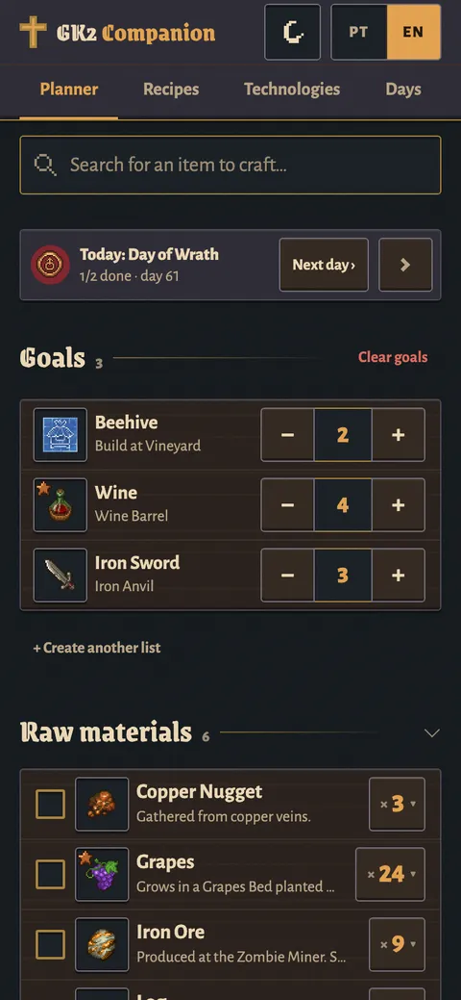
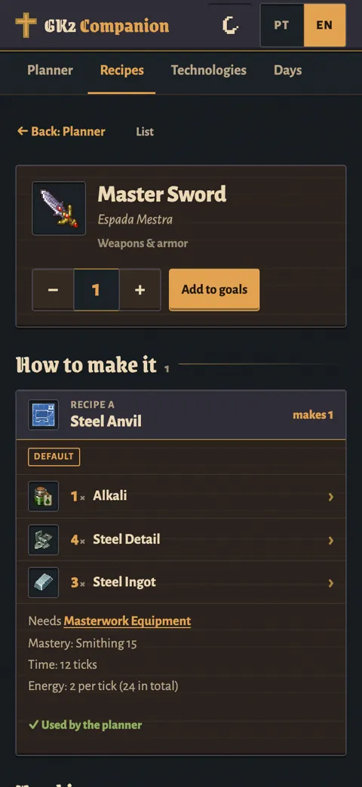
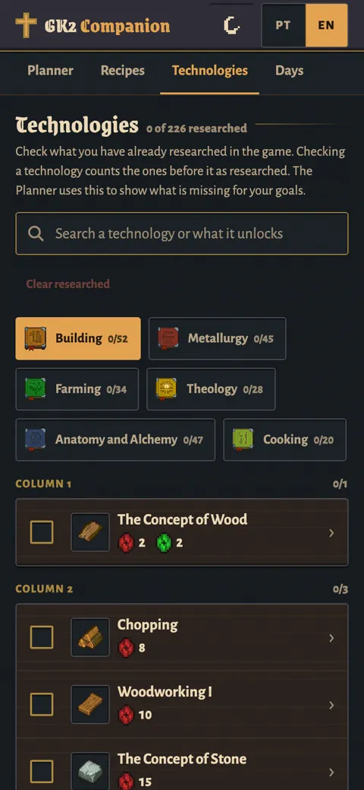
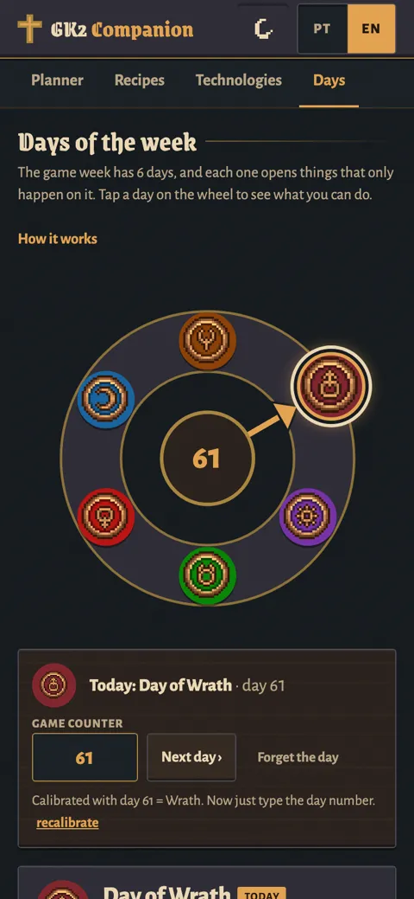
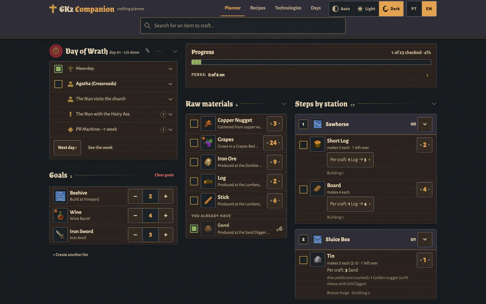

Planner
Add what you want to build. See every raw material to gather and what to craft at each station, in order. Tick off what you already have, and pick perks or alternative recipes.
Graveyard Keeper 2 · fan-made crafting planner
Keep it on your phone next to the game. Pick what you want to craft and it lists every raw material and each step by station, in order.
Free · No ads · No account needed · Fan-made, not affiliated with Lazy Bear Games
I kept forgetting what I still had to gather, so I made this for my phone. Maybe it helps you too. — Hugo
Pick what you want to make. The app works out the rest, down to the last log and the last workbench.
Add what you want to build. See every raw material to gather and what to craft at each station, in order. Tick off what you already have, and pick perks or alternative recipes.
All 690 items and 695 recipes, with search and filters. Each item shows how to make it and everything it is used in.
All 226 techs in 6 branches. The planner lists the ones you still need, in research order, with the red, green and blue point totals.
The game's 6-day wheel and what happens on each day. A "Today" panel in the planner, and a one-time calibration against the in-game day counter.
Switch languages at any time. Brazilian Portuguese names come from the game's own files; anything unofficial is labeled, and you can rename it.
Night, parchment or follow your system. When you're signed in to Claude, your plan opens the same on phone and computer.
Made for a phone next to the game, and it works just as well on a desktop.

Planner: everything to gather, step by step

Recipes: how to make it and what it’s used in

Technologies: what to research next

Days: what happens today

The app works right away, no account needed. To keep your plan safe and the same on phone and PC, sign in to Claude.
Not signed in? Everything still works, but the plan stays only in that browser (the app's footer says This device only). iPhones can wipe it after a few days without use.
Your plan is tied to your own Claude account. It isn't public and other players can't see it.
Then it's one tap away, like an app.
Playing on PC? Keep the app open on your phone next to the game, signed in with the same account.
Want to change something, or make one for another game? The guide shows how to copy it.
How to make your own copy